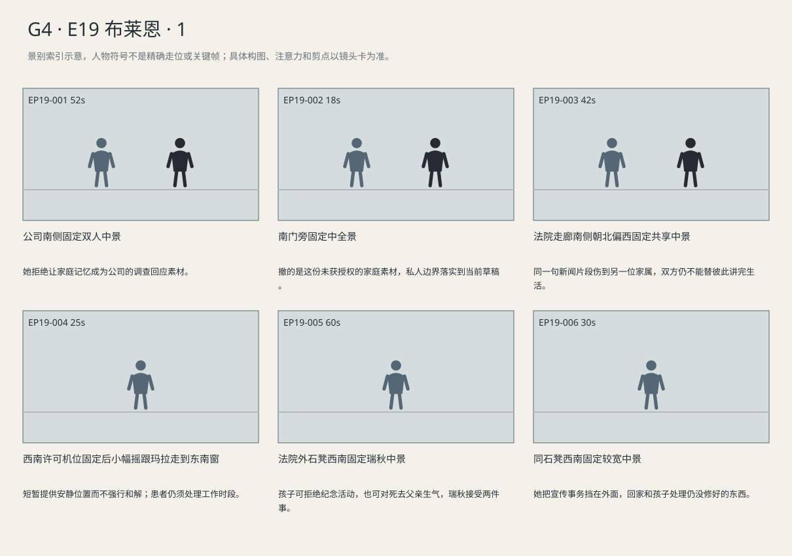

公司纪念用途被拒，瑞秋与玛拉仍无法互相说服；她却为真实诊所电话让出位置，也允许儿子对父亲生气。
剧本Markdown · 全部独立复制稿 · 英语字幕 · 中文字幕
详细剧本
E19-SC01 · 日·同周纽约 · INSURER
公司会议室北面的草稿页面停在一段厨房影像。瑞秋坐桌西，棕袋贴着腿；维克多在东，平板旁压着用途授权页。玻璃走廊外午餐车经过，他把笔和授权一并推到她面前。
维克多（使用英语，把催签说得像在帮她保留丈夫）：We need your okay by noon. The kitchen clip's the only part that feels personal.
中文对照：中午前得有你的答复。只有厨房那段，还有点他在家里的样子。
瑞秋没碰笔，先看向屏幕边上另一段关于调查的标题。
瑞秋（使用英语，抓用途）：Why is it on the investigation page?
中文对照：为什么放在回应调查的页面？
维克多在平板上向下移一点，厨房预览仍在调查回应下方。瑞秋用未签页隔开自己与屏幕。
维克多（使用英语，把用途争议缩成页面位置）：It's below the response. Same page.
中文对照：就在回应下面，同一页。
瑞秋（使用英语，指出家庭影像被并入公司回应）：Then people won't know where one stops.
中文对照：那别人就分不清哪一段是哪一段了。
维克多（使用英语，试图安抚）：People need to remember him.
中文对照：大家需要记住他。
她把授权页翻回用途那一面，用指甲停住家庭影像的条款。
瑞秋（使用英语，把未签页推回去，语气不加重）：The company statement can stay. Take our video out. I'm not signing this.
中文对照：公司声明可以留。把我们家的视频拿掉，这份我不签。
维克多将笔收回，把平板拉到自己这边，关掉那段厨房草稿。
维克多（使用英语，收回方案，不再劝她签眼前这份）：Okay. We'll take it out. I'll send you a new version.
中文对照：好，我们拿掉。改好再发你。
瑞秋（使用英语，起身前补清两个条件）：No footage of the children. And send it to my lawyer.
中文对照：孩子的镜头都不要。还有，发给我的律师。
瑞秋起身。未签的页仍在公司桌中间，她只带走自己的棕袋，从南门离开。
E19-SC02 · 日·数日后 · COURT-CORRIDOR
数日后法院走廊，瑞秋坐西侧候证椅北端，文件袋放膝上。玛拉穿灰风衣罩工服坐稍南，蓝夹左臂、手机右手。凯文在北门附近与工作人员核对安排。安检托盘在南端碰了一声，瑞秋转向玛拉。
瑞秋（使用英语，突兀地问）：You called him polite.
中文对照：你说他很客气。
玛拉（使用英语，只答所见）：When he ordered. That's what I was asked.
中文对照：点餐时是。别人问的就是那个。
瑞秋捏住袋扣，话比原先打算的多了一句。
瑞秋（使用英语，问出来才察觉自己说多了）：That clip's been on all week. Did anyone ask what Brian was like at home?
中文对照：那段播了一整周。有人问过布莱恩在家里是什么样吗？
玛拉（使用英语，不拿自己的遭遇回击，只答亲眼所见）：I didn't know your husband. They asked me about that morning.
中文对照：我不认识你丈夫。他们问的是那天早上的事。
玛拉没有取出自己的拒赔单。她右手手机开始振动，号码来自宾州诊所。她举起手机向瑞秋示意，接通后侧身避开人声。
玛拉（使用英语，听不清电话）：Can you say that again? Thursday at ten?
中文对照：能再说一遍吗？周四十点？
走廊另一端有人开门，电话被盖住。瑞秋起身，指向东南窗边的空处。
瑞秋（使用英语，给位置不劝解）：By the window. It's quieter.
中文对照：到窗边，那里安静。
玛拉走过去，蓝夹仍压在左臂。医生从电话里重复安排。
医生（使用英语，普通确认）：Thursday at ten. Bring the medication list.
中文对照：周四十点，带上用药清单。
玛拉拿拇指压住通话屏边缘，没开免提；瑞秋已经向西侧椅子退回。
玛拉（使用英语，在终于听清后安排自己的工作限制）：I can't take calls at work. If it changes, leave a message.
中文对照：我上班时接不了电话。有变动的话，给我留语音。
她等电话那端确认的不可辨线路声，挂断后先把周四十点存进日历，再收手机。
她终于听清，用手机外的左手指尖在蓝夹边沿记住十点的节拍。瑞秋回到原椅，二人没有道歉，也没有拥抱。
E19-SC03 · 下午·同日法院外 · EXTERIOR
下午法院南门外，瑞秋在台阶东侧石凳坐下，把棕袋留在左边，右手接起儿子的电话。西栏杆处记者仍采访别人，没有转向她。
儿子电话声音（使用英语，不想配合）：School wants a photo for the memorial thing. Do I have to?
中文对照：学校为那个纪念活动要照片。我必须给吗？
瑞秋（使用英语，先护住选择）：No. I'll answer. You don't have to send them anything.
中文对照：不用。我来回复，你不必发给他们。
电话那端没立刻继续，瑞秋仍把手机贴在耳边，等孩子说具体担心。
儿子电话声音（使用英语，担心自己被单独问）：They said everyone else's parents already sent one.
中文对照：他们说，别人家长都已经交了。
瑞秋（使用英语，承担成年人该处理的请求）：I'll email them. You don't need to explain it at school.
中文对照：我给他们发邮件。你在学校不用解释。
她等儿子说完，不急着结束。孩子那端传来拖动纸盒的声音。
儿子电话声音（使用英语，记起未完的事）：I found the plane. The wing's still off.
中文对照：我找到那架飞机了，翅膀还掉着。
瑞秋（使用英语，听出回收）：He said Saturday, didn't he?
中文对照：他说过周六，对吧？
她左手本已摸到文件袋扣，听到周六时停住。
儿子电话声音（使用英语，带一点怒气）：He kept saying Saturday. I thought he was putting me off.
中文对照：他总说周六。我以为他在敷衍我。
瑞秋（使用英语，听完孩子的气话，不急着劝他原谅）：I know. You were waiting for him to fix it. I'd be mad too.
中文对照：我知道。你一直等着他修好呢。换我也会生气。
两人之间有一段没说话的时间，车声从南侧经过。
瑞秋（使用英语，只答应回家一起看，不许诺修好）：Leave it there. I'll be home before dinner. We can look at it together.
中文对照：先放那儿。我晚饭前到家，我们一起看看。
通话结束，她先在手机记下给学校回邮件的待办，才把手机放回右外套袋，取出自己的家庭陈述草稿，在顶端写下Brian。她把陈述草稿按旧折线折好，放回自己的棕文件袋，没有再填下一段。她提起棕袋站起，沿台阶南侧离开。
景别索引板
简化人物符号仅用于检索景别。完整镜头卡、信息变化及相邻剪点另页阅读。

逐镜复制稿
EP19-001 · 制作号E19-SH001 · 52s · 公司南侧固定双人中景
她拒绝让家庭记忆成为公司的调查回应素材。
成片采用 [0,52) 秒；3个生成候选，技术边界不是剪点。候选未生成。
成片镜 E19-SH001 共52秒；下面3个独立生成候选共同服务本镜。技术接续不等于成片剪点，不能将本文件整段提交为一次任务。先制作并核验连续表演、机位和声线，再决定延长或覆盖方案；当前无实际媒体。
【E19-SH001-G01 · 本镜采用 0—18 秒】
16:9横屏，当代美国真人现实悬疑。环境低至中等饱和，人物肤色保持真实差异与自然纹理；深黑保留衣料和道具分离，白纸与白领高光柔和有层次。冷暖来自本镜已有物理光源，不统一青橙、不磨皮、不以整体欠曝制造悬疑。遵循本镜机位、表演与焦点，不擅自追加缓推、急变焦或摇晃。
场次风格：本场时段：日·同周纽约。本场光源启用及强度以明确时段和正文为准，同场反打继承光源方向；不因景别变化任意换色温。 本地光色与材质：玻璃、浅灰表面、整洁木色与中性肤色构成明净办公室；不以邪恶绿光标记立场。玻璃边缘和桌面分区体现发言权，摄影只按本镜既定触发响应说话人。
总生成长度20秒，为中间18秒采用区间保留开头和结尾各1秒自然余量，不增添剧情。
人物：
以下为连续镜的身份库；人物是否已入画、离场及持物只依本段起态与动作，不能把整镜所有角色同时塞入本段。
维克多，50岁白人男性，短灰发、整洁胡茬、海军蓝西装、银灰领带，平板电脑。声音平稳，不以反派邪笑/低吼替代控制力。
瑞秋，45岁白人女性，深金棕齐肩发、棕羊毛外套、黑连衣裙、素银耳钉，棕色文件袋。声音中低、压住情绪，不全程哽咽。
环境与光源：公司会议室/工区共享楼层；入口南、玻璃走廊东、会议桌中央、北侧显示屏、西窗。质检工位靠东侧，账号权限有限。屏幕内容后期替换。
景别/机位：公司南侧固定双人中景
构图：沿用该成片镜既定机位和场景方向；当前站位、朝向与持物：维克多东侧将笔压在授权页上，瑞秋西侧未伸手。
起始画面：维克多东侧将笔压在授权页上，瑞秋西侧未伸手。
事件与表演：维克多推笔与用途页，瑞秋不接，看调查页后问家庭影像为什么在此。 同一成片镜连续接续，人物位置、物件归属、光线与机位轨迹不重置。
注意力变化：维克多东侧将笔压在授权页上，瑞秋西侧未伸手。 → 维克多推笔与用途页，瑞秋不接，看调查页后问家庭影像为什么在此。 末步真实状态直接接下一段，不重演。
摄影机：公司南侧固定双人中景，北屏调查回应与厨房预览只作版面位置，不放全屏家庭影片；维克多东、瑞秋西，不越桌。
焦点：仅响应本段当前动作与受话关系；不预先转向尚未发生的后段事件。
结束状态：维克多推笔与用途页，瑞秋不接，看调查页后问家庭影像为什么在此。 末步真实状态直接接下一段，不重演。
声音：<公司中央空调低响；当前空间连续环境底声；拟音只随本段真实动作与物件接触发生，已完成事件不重演；可辨英语仅为下列本段对白。>
(无背景音乐；先以表演、对白、真实环境声成立，禁止在技术段接缝加音乐遮掩。)
准确对白按顺序：
维克多向瑞秋，把催签说得像在帮她保留丈夫，只使用英语说一次：{We need your okay by noon. The kitchen clip's the only part that feels personal.}
瑞秋向维克多，抓用途，只使用英语说一次：{Why is it on the investigation page?}
只说列出的英语原句；导演说明不发声，不说中文译文，不额外加旁白或对白。手机/公文/字幕均由后期叠加，生成画面不排字。单镜连续，不加入内部切镜；前后保持身份、服装、门窗、物件与接触状态一致。
【E19-SH001-G02 · 本镜采用 18—35 秒】
16:9横屏，当代美国真人现实悬疑。环境低至中等饱和，人物肤色保持真实差异与自然纹理；深黑保留衣料和道具分离，白纸与白领高光柔和有层次。冷暖来自本镜已有物理光源，不统一青橙、不磨皮、不以整体欠曝制造悬疑。遵循本镜机位、表演与焦点，不擅自追加缓推、急变焦或摇晃。
场次风格：本场时段：日·同周纽约。本场光源启用及强度以明确时段和正文为准，同场反打继承光源方向；不因景别变化任意换色温。 本地光色与材质：玻璃、浅灰表面、整洁木色与中性肤色构成明净办公室；不以邪恶绿光标记立场。玻璃边缘和桌面分区体现发言权，摄影只按本镜既定触发响应说话人。
总生成长度19秒，为中间17秒采用区间保留开头和结尾各1秒自然余量，不增添剧情。
人物：
以下为连续镜的身份库；人物是否已入画、离场及持物只依本段起态与动作，不能把整镜所有角色同时塞入本段。
维克多，50岁白人男性，短灰发、整洁胡茬、海军蓝西装、银灰领带，平板电脑。声音平稳，不以反派邪笑/低吼替代控制力。
瑞秋，45岁白人女性，深金棕齐肩发、棕羊毛外套、黑连衣裙、素银耳钉，棕色文件袋。声音中低、压住情绪，不全程哽咽。
环境与光源：公司会议室/工区共享楼层；入口南、玻璃走廊东、会议桌中央、北侧显示屏、西窗。质检工位靠东侧，账号权限有限。屏幕内容后期替换。
景别/机位：公司南侧固定双人中景
构图：沿用该成片镜既定机位和场景方向；当前站位、朝向与持物：维克多推笔与用途页，瑞秋不接，看调查页后问家庭影像为什么在此。 末步真实状态直接接下一段，不重演。
起始画面：维克多推笔与用途页，瑞秋不接，看调查页后问家庭影像为什么在此。 末步真实状态直接接下一段，不重演。
事件与表演：维克多下移预览说明同页，瑞秋指出混用；未签页仍留桌中。 同一成片镜连续接续，人物位置、物件归属、光线与机位轨迹不重置。
注意力变化：维克多推笔与用途页，瑞秋不接，看调查页后问家庭影像为什么在此。 末步真实状态直接接下一段，不重演。 → 维克多下移预览说明同页，瑞秋指出混用；未签页仍留桌中。 末步真实状态直接接下一段，不重演。
摄影机：公司南侧固定双人中景，北屏调查回应与厨房预览只作版面位置，不放全屏家庭影片；维克多东、瑞秋西，不越桌。
焦点：仅响应本段当前动作与受话关系；不预先转向尚未发生的后段事件。
结束状态：维克多下移预览说明同页，瑞秋指出混用；未签页仍留桌中。 末步真实状态直接接下一段，不重演。
声音：<公司中央空调低响；当前空间连续环境底声；拟音只随本段真实动作与物件接触发生，已完成事件不重演；可辨英语仅为下列本段对白。>
(无背景音乐；先以表演、对白、真实环境声成立，禁止在技术段接缝加音乐遮掩。)
准确对白按顺序：
维克多向瑞秋，把用途争议缩成页面位置，只使用英语说一次：{It's below the response. Same page.}
瑞秋向维克多，指出家庭影像被并入公司回应，只使用英语说一次：{Then people won't know where one stops.}
只说列出的英语原句；导演说明不发声，不说中文译文，不额外加旁白或对白。手机/公文/字幕均由后期叠加，生成画面不排字。单镜连续，不加入内部切镜；前后保持身份、服装、门窗、物件与接触状态一致。
【E19-SH001-G03 · 本镜采用 35—52 秒】
16:9横屏，当代美国真人现实悬疑。环境低至中等饱和，人物肤色保持真实差异与自然纹理；深黑保留衣料和道具分离，白纸与白领高光柔和有层次。冷暖来自本镜已有物理光源，不统一青橙、不磨皮、不以整体欠曝制造悬疑。遵循本镜机位、表演与焦点，不擅自追加缓推、急变焦或摇晃。
场次风格：本场时段：日·同周纽约。本场光源启用及强度以明确时段和正文为准，同场反打继承光源方向；不因景别变化任意换色温。 本地光色与材质：玻璃、浅灰表面、整洁木色与中性肤色构成明净办公室；不以邪恶绿光标记立场。玻璃边缘和桌面分区体现发言权，摄影只按本镜既定触发响应说话人。
总生成长度19秒，为中间17秒采用区间保留开头和结尾各1秒自然余量，不增添剧情。
人物：
以下为连续镜的身份库；人物是否已入画、离场及持物只依本段起态与动作，不能把整镜所有角色同时塞入本段。
维克多，50岁白人男性，短灰发、整洁胡茬、海军蓝西装、银灰领带，平板电脑。声音平稳，不以反派邪笑/低吼替代控制力。
瑞秋，45岁白人女性，深金棕齐肩发、棕羊毛外套、黑连衣裙、素银耳钉，棕色文件袋。声音中低、压住情绪，不全程哽咽。
环境与光源：公司会议室/工区共享楼层；入口南、玻璃走廊东、会议桌中央、北侧显示屏、西窗。质检工位靠东侧，账号权限有限。屏幕内容后期替换。
景别/机位：公司南侧固定双人中景
构图：沿用该成片镜既定机位和场景方向；当前站位、朝向与持物：维克多下移预览说明同页，瑞秋指出混用；未签页仍留桌中。 末步真实状态直接接下一段，不重演。
起始画面：维克多下移预览说明同页，瑞秋指出混用；未签页仍留桌中。 末步真实状态直接接下一段，不重演。
事件与表演：维克多诉诸纪念，她明确拒签撤视频，把未签纸推回，双手回棕袋。 同一成片镜连续接续，人物位置、物件归属、光线与机位轨迹不重置。
注意力变化：维克多下移预览说明同页，瑞秋指出混用；未签页仍留桌中。 末步真实状态直接接下一段，不重演。 → 维克多诉诸纪念，她明确拒签撤视频，把未签纸推回，双手回棕袋。 末步真实状态直接接下一段，不重演。
摄影机：公司南侧固定双人中景，北屏调查回应与厨房预览只作版面位置，不放全屏家庭影片；维克多东、瑞秋西，不越桌。
焦点：仅响应本段当前动作与受话关系；不预先转向尚未发生的后段事件。
结束状态：维克多诉诸纪念，她明确拒签撤视频，把未签纸推回，双手回棕袋。 末步真实状态直接接下一段，不重演。
声音：<公司中央空调低响；当前空间连续环境底声；拟音只随本段真实动作与物件接触发生，已完成事件不重演；可辨英语仅为下列本段对白。>
(无背景音乐；先以表演、对白、真实环境声成立，禁止在技术段接缝加音乐遮掩。)
准确对白按顺序：
维克多向瑞秋，试图安抚，只使用英语说一次：{People need to remember him.}
瑞秋向维克多，把未签页推回去，语气不加重，只使用英语说一次：{The company statement can stay. Take our video out. I'm not signing this.}
只说列出的英语原句；导演说明不发声，不说中文译文，不额外加旁白或对白。手机/公文/字幕均由后期叠加，生成画面不排字。单镜连续，不加入内部切镜；前后保持身份、服装、门窗、物件与接触状态一致。静帧起态备稿
16:9横屏，当代美国真人现实悬疑。环境低至中等饱和，人物肤色保持真实差异与自然纹理；深黑保留衣料和道具分离，白纸与白领高光柔和有层次。冷暖来自本镜已有物理光源，不统一青橙、不磨皮、不以整体欠曝制造悬疑。遵循本镜机位、表演与焦点，不擅自追加缓推、急变焦或摇晃。
场次风格：本场时段：日·同周纽约。本场光源启用及强度以明确时段和正文为准，同场反打继承光源方向；不因景别变化任意换色温。 本地光色与材质：玻璃、浅灰表面、整洁木色与中性肤色构成明净办公室；不以邪恶绿光标记立场。玻璃边缘和桌面分区体现发言权，摄影只按本镜既定触发响应说话人。
维克多，50岁白人男性，短灰发、整洁胡茬、海军蓝西装、银灰领带，平板电脑。声音平稳，不以反派邪笑/低吼替代控制力。
瑞秋，45岁白人女性，深金棕齐肩发、棕羊毛外套、黑连衣裙、素银耳钉，棕色文件袋。声音中低、压住情绪，不全程哽咽。
公司会议室/工区共享楼层；入口南、玻璃走廊东、会议桌中央、北侧显示屏、西窗。质检工位靠东侧，账号权限有限。屏幕内容后期替换。
公司南侧固定双人中景；起态构图：维克多东侧将笔压在授权页上，瑞秋西侧未伸手。。空间方位按上列环境，人物只处于起态；本镜后续调度不出现在静帧。此图不描画尚未发生的动作，不生成字幕和公文长字。
| 英语原句 | 中文对照 | 预定窗口 |
|---|
| 维克多：We need your okay by noon. The kitchen clip's the only part that feels personal. | 中午前得有你的答复。只有厨房那段，还有点他在家里的样子。 | 0.8–8.9s |
| 瑞秋：Why is it on the investigation page? | 为什么放在回应调查的页面？ | 9.55–13.46s |
| 维克多：It's below the response. Same page. | 就在回应下面，同一页。 | 18.8–22.18s |
| 瑞秋：Then people won't know where one stops. | 那别人就分不清哪一段是哪一段了。 | 22.83–26.74s |
| 维克多：People need to remember him. | 大家需要记住他。 | 35.8–38.66s |
| 瑞秋：The company statement can stay. Take our video out. I'm not signing this. | 公司声明可以留。把我们家的视频拿掉，这份我不签。 | 39.31–46.36s |
观众信息：家属可能只在审纪念片。 → 她拒绝让家庭记忆成为公司的调查回应素材。
切点：成片剪点由本镜结束后注意与任务发生变化决定：她拒绝让家庭记忆成为公司的调查回应素材。 技术生成段边界不触发剪辑。
接口：下一成片镜 E19-SH004。同场时承接本镜已完成动作，不重复表演；跨场依剧本时间和空间建立。
EP19-002 · 制作号E19-SH004 · 18s · 南门旁固定中全景
撤的是这份未获授权的家庭素材，私人边界落实到当前草稿。
成片采用 [52,70) 秒；1个生成候选，技术边界不是剪点。候选未生成。
16:9横屏，当代美国真人现实悬疑。环境低至中等饱和，人物肤色保持真实差异与自然纹理；深黑保留衣料和道具分离，白纸与白领高光柔和有层次。冷暖来自本镜已有物理光源，不统一青橙、不磨皮、不以整体欠曝制造悬疑。遵循本镜机位、表演与焦点，不擅自追加缓推、急变焦或摇晃。
场次风格：本场时段：日·同周纽约。本场光源启用及强度以明确时段和正文为准，同场反打继承光源方向；不因景别变化任意换色温。 本地光色与材质：玻璃、浅灰表面、整洁木色与中性肤色构成明净办公室；不以邪恶绿光标记立场。玻璃边缘和桌面分区体现发言权，摄影只按本镜既定触发响应说话人。
总生成长度20秒，为中间18秒采用区间保留开头和结尾各1秒自然余量，不增添剧情。
人物：
维克多，50岁白人男性，短灰发、整洁胡茬、海军蓝西装、银灰领带，平板电脑。声音平稳，不以反派邪笑/低吼替代控制力。
瑞秋，45岁白人女性，深金棕齐肩发、棕羊毛外套、黑连衣裙、素银耳钉，棕色文件袋。声音中低、压住情绪，不全程哽咽。
环境与光源：公司会议室/工区共享楼层；入口南、玻璃走廊东、会议桌中央、北侧显示屏、西窗。质检工位靠东侧，账号权限有限。屏幕内容后期替换。
景别/机位：南门旁固定中全景
构图：公司会议室南门、东玻璃走廊、中央桌、北屏、西窗冷光；瑞秋西、维克多东，机位南侧。本成片镜按如下连续机位与人物动作执行：南门旁固定中全景，给瑞秋真实离席路线；不以镜头后退替代她的决定。 维克多撤下厨房预览并答应新版，瑞秋补不许带孩子且发律师的条件，等屏幕恢复公司稿才拿棕袋离开。
起始画面：维克多面前放回未签页，平板靠东。
事件与表演：维克多撤下厨房预览并答应新版，瑞秋补不许带孩子且发律师的条件，等屏幕恢复公司稿才拿棕袋离开。
注意力变化：拒签可能被当作要求重剪。 → 撤的是这份未获授权的家庭素材，私人边界落实到当前草稿。
摄影机：南门旁固定中全景，给瑞秋真实离席路线；不以镜头后退替代她的决定。
焦点：按人物当前任务保持共享画面可读；撤的是这份未获授权的家庭素材，私人边界落实到当前草稿。 不按每句说话人自动反打；细字由后期证据页必要叠加，不要求景深同时清楚全部正文。
结束状态：撤的是这份未获授权的家庭素材，私人边界落实到当前草稿。；具体动作终态：维克多撤下厨房预览并答应新版，瑞秋补不许带孩子且发律师的条件，等屏幕恢复公司稿才拿棕袋离开。
声音：<锁屏轻响、椅脚、南门开合。；只保留本镜对白表所列可辨英语，原场内画外、电话、直播声源关系保持；不增配解释旁白。>
(无背景音乐；先以表演、对白、真实环境声成立，禁止在技术段接缝加音乐遮掩。)
准确对白按顺序：
维克多向瑞秋，收回方案，不再劝她签眼前这份，只使用英语说一次：{Okay. We'll take it out. I'll send you a new version.}
瑞秋向维克多，起身前补清两个条件，只使用英语说一次：{No footage of the children. And send it to my lawyer.}
只说列出的英语原句；导演说明不发声，不说中文译文，不额外加旁白或对白。手机/公文/字幕均由后期叠加，生成画面不排字。单镜连续，不加入内部切镜；前后保持身份、服装、门窗、物件与接触状态一致。静帧起态备稿
16:9横屏，当代美国真人现实悬疑。环境低至中等饱和，人物肤色保持真实差异与自然纹理；深黑保留衣料和道具分离，白纸与白领高光柔和有层次。冷暖来自本镜已有物理光源，不统一青橙、不磨皮、不以整体欠曝制造悬疑。遵循本镜机位、表演与焦点，不擅自追加缓推、急变焦或摇晃。
场次风格：本场时段：日·同周纽约。本场光源启用及强度以明确时段和正文为准，同场反打继承光源方向；不因景别变化任意换色温。 本地光色与材质：玻璃、浅灰表面、整洁木色与中性肤色构成明净办公室；不以邪恶绿光标记立场。玻璃边缘和桌面分区体现发言权，摄影只按本镜既定触发响应说话人。
维克多，50岁白人男性，短灰发、整洁胡茬、海军蓝西装、银灰领带，平板电脑。声音平稳，不以反派邪笑/低吼替代控制力。
瑞秋，45岁白人女性，深金棕齐肩发、棕羊毛外套、黑连衣裙、素银耳钉，棕色文件袋。声音中低、压住情绪，不全程哽咽。
公司会议室/工区共享楼层；入口南、玻璃走廊东、会议桌中央、北侧显示屏、西窗。质检工位靠东侧，账号权限有限。屏幕内容后期替换。
南门旁固定中全景；起态构图：维克多面前放回未签页，平板靠东。。空间方位按上列环境，人物只处于起态；本镜后续调度不出现在静帧。此图不描画尚未发生的动作，不生成字幕和公文长字。
| 英语原句 | 中文对照 | 预定窗口 |
|---|
| 维克多：Okay. We'll take it out. I'll send you a new version. | 好，我们拿掉。改好再发你。 | 0.8–6.8s |
| 瑞秋：No footage of the children. And send it to my lawyer. | 孩子的镜头都不要。还有，发给我的律师。 | 7.45–13.45s |
观众信息：拒签可能被当作要求重剪。 → 撤的是这份未获授权的家庭素材，私人边界落实到当前草稿。
切点：成片剪点由本镜结束后注意与任务发生变化决定：撤的是这份未获授权的家庭素材，私人边界落实到当前草稿。 技术生成段边界不触发剪辑。
接口：本场结果成立后切入 E19-SC02（COURT-CORRIDOR，日·数日后）；以新场开头建立空间和人物持物，环境声按新场接入。
EP19-003 · 制作号E19-SH005 · 42s · 法院走廊南侧朝北偏西固定共享中景
同一句新闻片段伤到另一位家属，双方仍不能替彼此讲完生活。
成片采用 [70,112) 秒；2个生成候选，技术边界不是剪点。候选未生成。
成片镜 E19-SH005 共42秒；下面2个独立生成候选共同服务本镜。技术接续不等于成片剪点，不能将本文件整段提交为一次任务。先制作并核验连续表演、机位和声线，再决定延长或覆盖方案；当前无实际媒体。
【E19-SH005-G01 · 本镜采用 0—20 秒】
16:9横屏，当代美国真人现实悬疑。环境低至中等饱和，人物肤色保持真实差异与自然纹理；深黑保留衣料和道具分离，白纸与白领高光柔和有层次。冷暖来自本镜已有物理光源，不统一青橙、不磨皮、不以整体欠曝制造悬疑。遵循本镜机位、表演与焦点，不擅自追加缓推、急变焦或摇晃。
场次风格：本场时段：日·数日后。本场光源启用及强度以明确时段和正文为准，同场反打继承光源方向；不因景别变化任意换色温。 本地光色与材质：东南窗光按时段影响走廊，西椅、东饮水机与北门层次清楚；同一空间的人物继承一致照明，不用独立圣洁柔光区分立场。
总生成长度22秒，为中间20秒采用区间保留开头和结尾各1秒自然余量，不增添剧情。
人物：
以下为连续镜的身份库；人物是否已入画、离场及持物只依本段起态与动作，不能把整镜所有角色同时塞入本段。
瑞秋，45岁白人女性，深金棕齐肩发、棕羊毛外套、黑连衣裙、素银耳钉，棕色文件袋。声音中低、压住情绪，不全程哽咽。
玛拉，38岁白人女性，栗棕发低马尾、眼下疲态、圆方脸，黑色polo工服、灰围裙、深灰裤、防滑鞋；灰风衣为下班外套。手机和蓝色资料夹为独立道具，位置与持物依当前镜头起态和连续动作。声音中音，快而实在，对孩子放缓。
患者代理律师凯文，40岁黑人男性，短发、棕灰西装、白衬衫、无领带，黑文件包。与海伦为不同委托关系；玛拉已和解，保全申请由其他尚未和解患者发起，玛拉按保留条款提供材料。
环境与光源：走廊南北向；西侧候证椅、东侧饮水机、北端法庭门、南端安检，东南窗光。人物和声音依当前场次，空间母稿不附带剧情事件。
景别/机位：法院走廊南侧朝北偏西固定共享中景
构图：沿用该成片镜既定机位和场景方向；当前站位、朝向与持物：两人西椅南北分坐，玛拉右手手机低垂。
起始画面：两人西椅南北分坐，玛拉右手手机低垂。
事件与表演：两人隔位坐着，瑞秋提客气，玛拉限定点餐语境，不取资料。 同一成片镜、同一相机路径与速度；接续上一段已发生动作，不重做开头。
注意力变化：两人西椅南北分坐，玛拉右手手机低垂。 → 两人隔位坐着，瑞秋提客气，玛拉限定点餐语境，不取资料。 角色与物件停留在这一步的连续状态，机位及照明不重置。
摄影机：法院走廊南侧朝北偏西固定共享中景，西椅两人间留空位，北门凯文只作既有远背景；不拆成快速对骂反打。
焦点：仅响应本段当前动作与受话关系；不预先转向尚未发生的后段事件。
结束状态：两人隔位坐着，瑞秋提客气，玛拉限定点餐语境，不取资料。 角色与物件停留在这一步的连续状态，机位及照明不重置。
声音：<走廊通风、远端安检不可辨人声；当前空间连续环境底声；拟音只随本段真实动作与物件接触发生，已完成事件不重演；可辨英语仅为下列本段对白。>
(无背景音乐；先以表演、对白、真实环境声成立，禁止在技术段接缝加音乐遮掩。)
准确对白按顺序：
瑞秋向玛拉，突兀地问，只使用英语说一次：{You called him polite.}
玛拉向瑞秋，只答所见，只使用英语说一次：{When he ordered. That's what I was asked.}
只说列出的英语原句；导演说明不发声，不说中文译文，不额外加旁白或对白。手机/公文/字幕均由后期叠加，生成画面不排字。单镜连续，不加入内部切镜；前后保持身份、服装、门窗、物件与接触状态一致。
【E19-SH005-G02 · 本镜采用 20—42 秒】
16:9横屏，当代美国真人现实悬疑。环境低至中等饱和，人物肤色保持真实差异与自然纹理；深黑保留衣料和道具分离，白纸与白领高光柔和有层次。冷暖来自本镜已有物理光源，不统一青橙、不磨皮、不以整体欠曝制造悬疑。遵循本镜机位、表演与焦点，不擅自追加缓推、急变焦或摇晃。
场次风格：本场时段：日·数日后。本场光源启用及强度以明确时段和正文为准，同场反打继承光源方向；不因景别变化任意换色温。 本地光色与材质：东南窗光按时段影响走廊，西椅、东饮水机与北门层次清楚；同一空间的人物继承一致照明，不用独立圣洁柔光区分立场。
总生成长度24秒，为中间22秒采用区间保留开头和结尾各1秒自然余量，不增添剧情。
人物：
以下为连续镜的身份库；人物是否已入画、离场及持物只依本段起态与动作，不能把整镜所有角色同时塞入本段。
瑞秋，45岁白人女性，深金棕齐肩发、棕羊毛外套、黑连衣裙、素银耳钉，棕色文件袋。声音中低、压住情绪，不全程哽咽。
玛拉，38岁白人女性，栗棕发低马尾、眼下疲态、圆方脸，黑色polo工服、灰围裙、深灰裤、防滑鞋；灰风衣为下班外套。手机和蓝色资料夹为独立道具，位置与持物依当前镜头起态和连续动作。声音中音，快而实在，对孩子放缓。
患者代理律师凯文，40岁黑人男性，短发、棕灰西装、白衬衫、无领带，黑文件包。与海伦为不同委托关系；玛拉已和解，保全申请由其他尚未和解患者发起，玛拉按保留条款提供材料。
环境与光源：走廊南北向；西侧候证椅、东侧饮水机、北端法庭门、南端安检，东南窗光。人物和声音依当前场次，空间母稿不附带剧情事件。
景别/机位：法院走廊南侧朝北偏西固定共享中景
构图：沿用该成片镜既定机位和场景方向；当前站位、朝向与持物：两人隔位坐着，瑞秋提客气，玛拉限定点餐语境，不取资料。 角色与物件停留在这一步的连续状态，机位及照明不重置。
起始画面：两人隔位坐着，瑞秋提客气，玛拉限定点餐语境，不取资料。 角色与物件停留在这一步的连续状态，机位及照明不重置。
事件与表演：瑞秋捏袋扣问丈夫在家里怎样，玛拉承认不认识；电话随后振动，玛拉示意来电。 同一成片镜、同一相机路径与速度；接续上一段已发生动作，不重做开头。
注意力变化：两人隔位坐着，瑞秋提客气，玛拉限定点餐语境，不取资料。 角色与物件停留在这一步的连续状态，机位及照明不重置。 → 瑞秋捏袋扣问丈夫在家里怎样，玛拉承认不认识；电话随后振动，玛拉示意来电。 角色与物件停留在这一步的连续状态，机位及照明不重置。
摄影机：法院走廊南侧朝北偏西固定共享中景，西椅两人间留空位，北门凯文只作既有远背景；不拆成快速对骂反打。
焦点：仅响应本段当前动作与受话关系；不预先转向尚未发生的后段事件。
结束状态：瑞秋捏袋扣问丈夫在家里怎样，玛拉承认不认识；电话随后振动，玛拉示意来电。 角色与物件停留在这一步的连续状态，机位及照明不重置。
声音：<走廊通风、远端安检不可辨人声；当前空间连续环境底声；拟音只随本段真实动作与物件接触发生，已完成事件不重演；可辨英语仅为下列本段对白。>
(无背景音乐；先以表演、对白、真实环境声成立，禁止在技术段接缝加音乐遮掩。)
准确对白按顺序：
瑞秋向玛拉，问出来才察觉自己说多了，只使用英语说一次：{That clip's been on all week. Did anyone ask what Brian was like at home?}
玛拉向瑞秋，不拿自己的遭遇回击，只答亲眼所见，只使用英语说一次：{I didn't know your husband. They asked me about that morning.}
只说列出的英语原句；导演说明不发声，不说中文译文，不额外加旁白或对白。手机/公文/字幕均由后期叠加，生成画面不排字。单镜连续，不加入内部切镜；前后保持身份、服装、门窗、物件与接触状态一致。静帧起态备稿
16:9横屏，当代美国真人现实悬疑。环境低至中等饱和，人物肤色保持真实差异与自然纹理；深黑保留衣料和道具分离，白纸与白领高光柔和有层次。冷暖来自本镜已有物理光源，不统一青橙、不磨皮、不以整体欠曝制造悬疑。遵循本镜机位、表演与焦点，不擅自追加缓推、急变焦或摇晃。
场次风格：本场时段：日·数日后。本场光源启用及强度以明确时段和正文为准，同场反打继承光源方向；不因景别变化任意换色温。 本地光色与材质：东南窗光按时段影响走廊，西椅、东饮水机与北门层次清楚；同一空间的人物继承一致照明，不用独立圣洁柔光区分立场。
瑞秋，45岁白人女性，深金棕齐肩发、棕羊毛外套、黑连衣裙、素银耳钉，棕色文件袋。声音中低、压住情绪，不全程哽咽。
玛拉，38岁白人女性，栗棕发低马尾、眼下疲态、圆方脸，黑色polo工服、灰围裙、深灰裤、防滑鞋；灰风衣为下班外套。手机和蓝色资料夹为独立道具，位置与持物依当前镜头起态和连续动作。声音中音，快而实在，对孩子放缓。
患者代理律师凯文，40岁黑人男性，短发、棕灰西装、白衬衫、无领带，黑文件包。与海伦为不同委托关系；玛拉已和解，保全申请由其他尚未和解患者发起，玛拉按保留条款提供材料。
走廊南北向；西侧候证椅、东侧饮水机、北端法庭门、南端安检，东南窗光。人物和声音依当前场次，空间母稿不附带剧情事件。
法院走廊南侧朝北偏西固定共享中景；起态构图：两人西椅南北分坐，玛拉右手手机低垂。。空间方位按上列环境，人物只处于起态；本镜后续调度不出现在静帧。此图不描画尚未发生的动作，不生成字幕和公文长字。
| 英语原句 | 中文对照 | 预定窗口 |
|---|
| 瑞秋：You called him polite. | 你说他很客气。 | 0.8–3.13s |
| 玛拉：When he ordered. That's what I was asked. | 点餐时是。别人问的就是那个。 | 3.78–8.21s |
| 瑞秋：That clip's been on all week. Did anyone ask what Brian was like at home? | 那段播了一整周。有人问过布莱恩在家里是什么样吗？ | 20.8–28.9s |
| 玛拉：I didn't know your husband. They asked me about that morning. | 我不认识你丈夫。他们问的是那天早上的事。 | 29.55–35.55s |
观众信息：观众知道玛拉只见过一个早晨。 → 同一句新闻片段伤到另一位家属，双方仍不能替彼此讲完生活。
切点：成片剪点由本镜结束后注意与任务发生变化决定：同一句新闻片段伤到另一位家属，双方仍不能替彼此讲完生活。 技术生成段边界不触发剪辑。
接口：下一成片镜 E19-SH008。同场时承接本镜已完成动作，不重复表演；跨场依剧本时间和空间建立。
EP19-004 · 制作号E19-SH008 · 25s · 西南许可机位固定后小幅摇跟玛拉走到东南窗
短暂提供安静位置而不强行和解；患者仍须处理工作时段。
成片采用 [112,137) 秒；1个生成候选，技术边界不是剪点。候选未生成。
16:9横屏，当代美国真人现实悬疑。环境低至中等饱和，人物肤色保持真实差异与自然纹理；深黑保留衣料和道具分离，白纸与白领高光柔和有层次。冷暖来自本镜已有物理光源，不统一青橙、不磨皮、不以整体欠曝制造悬疑。遵循本镜机位、表演与焦点，不擅自追加缓推、急变焦或摇晃。
场次风格：本场时段：日·数日后。本场光源启用及强度以明确时段和正文为准，同场反打继承光源方向；不因景别变化任意换色温。 本地光色与材质：东南窗光按时段影响走廊，西椅、东饮水机与北门层次清楚；同一空间的人物继承一致照明，不用独立圣洁柔光区分立场。
总生成长度27秒，为中间25秒采用区间保留开头和结尾各1秒自然余量，不增添剧情。
人物：
瑞秋，45岁白人女性，深金棕齐肩发、棕羊毛外套、黑连衣裙、素银耳钉，棕色文件袋。声音中低、压住情绪，不全程哽咽。
玛拉，38岁白人女性，栗棕发低马尾、眼下疲态、圆方脸，黑色polo工服、灰围裙、深灰裤、防滑鞋；灰风衣为下班外套。手机和蓝色资料夹为独立道具，位置与持物依当前镜头起态和连续动作。声音中音，快而实在，对孩子放缓。
本镜画外继承，声源/人物不入画：女治疗医生，约45岁，深棕肤色、短卷发、白袍、灰蓝工作服，普通清楚中音。负责必要医疗照护，争议围绕支付/授权，不拍成急诊拒绝救命的简单恶人。
患者代理律师凯文，40岁黑人男性，短发、棕灰西装、白衬衫、无领带，黑文件包。与海伦为不同委托关系；玛拉已和解，保全申请由其他尚未和解患者发起，玛拉按保留条款提供材料。
声源与背景限定：医生只从玛拉手机发声，不在纽约走廊出现；凯文在北门旁为无对白远背景，不走到两位女性中间。
环境与光源：走廊南北向；西侧候证椅、东侧饮水机、北端法庭门、南端安检，东南窗光。人物和声音依当前场次，空间母稿不附带剧情事件。
景别/机位：西南许可机位固定后小幅摇跟玛拉走到东南窗
构图：法院走廊南北向，西候证椅在左前景、东南窗在右中景、北法庭门在左后景；玛拉由西椅前走向东南窗，瑞秋不跟近。本成片镜按如下连续机位与人物动作执行：西南许可机位固定后小幅摇跟玛拉走到东南窗，凯文仍北门；止于她到位，不跟瑞秋另开反打。 玛拉听不清周四预约，瑞秋指窗边让出路，自己回椅。玛拉在窗前听医生重复后说明上班接不了电话，请变动留语音，挂断将十点存日历。
起始画面：玛拉接电话背靠走廊，瑞秋仍西椅。
事件与表演：玛拉听不清周四预约，瑞秋指窗边让出路，自己回椅。玛拉在窗前听医生重复后说明上班接不了电话，请变动留语音，挂断将十点存日历。
注意力变化：两人刚发生冲突。 → 短暂提供安静位置而不强行和解；患者仍须处理工作时段。
摄影机：西南许可机位固定后小幅摇跟玛拉走到东南窗，凯文仍北门；止于她到位，不跟瑞秋另开反打。
焦点：按人物当前任务保持共享画面可读；短暂提供安静位置而不强行和解；患者仍须处理工作时段。 不按每句说话人自动反打；细字由后期证据页必要叠加，不要求景深同时清楚全部正文。
结束状态：短暂提供安静位置而不强行和解；患者仍须处理工作时段。；具体动作终态：玛拉听不清周四预约，瑞秋指窗边让出路，自己回椅。玛拉在窗前听医生重复后说明上班接不了电话，请变动留语音，挂断将十点存日历。
声音：<南端门声盖住首问，医生窄频电话声在窗边清楚，不新增医生画面。；只保留本镜对白表所列可辨英语，原场内画外、电话、直播声源关系保持；不增配解释旁白。>
(无背景音乐；先以表演、对白、真实环境声成立，禁止在技术段接缝加音乐遮掩。)
准确对白按顺序：
玛拉向医生，听不清电话，只使用英语说一次：{Can you say that again? Thursday at ten?}
瑞秋向玛拉，给位置不劝解，只使用英语说一次：{By the window. It's quieter.}
医生向玛拉，普通确认，只使用英语说一次：{Thursday at ten. Bring the medication list.}
玛拉向医生，在终于听清后安排自己的工作限制，只使用英语说一次：{I can't take calls at work. If it changes, leave a message.}
只说列出的英语原句；导演说明不发声，不说中文译文，不额外加旁白或对白。手机/公文/字幕均由后期叠加，生成画面不排字。单镜连续，不加入内部切镜；前后保持身份、服装、门窗、物件与接触状态一致。静帧起态备稿
16:9横屏，当代美国真人现实悬疑。环境低至中等饱和，人物肤色保持真实差异与自然纹理；深黑保留衣料和道具分离，白纸与白领高光柔和有层次。冷暖来自本镜已有物理光源，不统一青橙、不磨皮、不以整体欠曝制造悬疑。遵循本镜机位、表演与焦点，不擅自追加缓推、急变焦或摇晃。
场次风格：本场时段：日·数日后。本场光源启用及强度以明确时段和正文为准，同场反打继承光源方向；不因景别变化任意换色温。 本地光色与材质：东南窗光按时段影响走廊，西椅、东饮水机与北门层次清楚；同一空间的人物继承一致照明，不用独立圣洁柔光区分立场。
瑞秋，45岁白人女性，深金棕齐肩发、棕羊毛外套、黑连衣裙、素银耳钉，棕色文件袋。声音中低、压住情绪，不全程哽咽。
玛拉，38岁白人女性，栗棕发低马尾、眼下疲态、圆方脸，黑色polo工服、灰围裙、深灰裤、防滑鞋；灰风衣为下班外套。手机和蓝色资料夹为独立道具，位置与持物依当前镜头起态和连续动作。声音中音，快而实在，对孩子放缓。
患者代理律师凯文，40岁黑人男性，短发、棕灰西装、白衬衫、无领带，黑文件包。与海伦为不同委托关系；玛拉已和解，保全申请由其他尚未和解患者发起，玛拉按保留条款提供材料。
走廊南北向；西侧候证椅、东侧饮水机、北端法庭门、南端安检，东南窗光。人物和声音依当前场次，空间母稿不附带剧情事件。
西南许可机位固定后小幅摇跟玛拉走到东南窗；起态构图：玛拉接电话背靠走廊，瑞秋仍西椅。。空间方位按上列环境，人物只处于起态；本镜后续调度不出现在静帧。此图不描画尚未发生的动作，不生成字幕和公文长字。
| 英语原句 | 中文对照 | 预定窗口 |
|---|
| 玛拉：Can you say that again? Thursday at ten? | 能再说一遍吗？周四十点？ | 0.8–5.23s |
| 瑞秋：By the window. It's quieter. | 到窗边，那里安静。 | 5.88–8.74s |
| 医生：Thursday at ten. Bring the medication list. | 周四十点，带上用药清单。 | 9.39–13.3s |
| 玛拉：I can't take calls at work. If it changes, leave a message. | 我上班时接不了电话。有变动的话，给我留语音。 | 13.95–20.48s |
观众信息：两人刚发生冲突。 → 短暂提供安静位置而不强行和解；患者仍须处理工作时段。
切点：成片剪点由本镜结束后注意与任务发生变化决定：短暂提供安静位置而不强行和解；患者仍须处理工作时段。 技术生成段边界不触发剪辑。
接口：本场结果成立后切入 E19-SC03（EXTERIOR，下午·同日法院外）；以新场开头建立空间和人物持物，环境声按新场接入。
EP19-005 · 制作号E19-SH009 · 60s · 法院外石凳西南固定瑞秋中景
孩子可拒绝纪念活动，也可对死去父亲生气，瑞秋接受两件事。
成片采用 [137,197) 秒；3个生成候选，技术边界不是剪点。候选未生成。
成片镜 E19-SH009 共60秒；下面3个独立生成候选共同服务本镜。技术接续不等于成片剪点，不能将本文件整段提交为一次任务。先制作并核验连续表演、机位和声线，再决定延长或覆盖方案；当前无实际媒体。
【E19-SH009-G01 · 本镜采用 0—20 秒】
16:9横屏，当代美国真人现实悬疑。环境低至中等饱和，人物肤色保持真实差异与自然纹理；深黑保留衣料和道具分离，白纸与白领高光柔和有层次。冷暖来自本镜已有物理光源，不统一青橙、不磨皮、不以整体欠曝制造悬疑。遵循本镜机位、表演与焦点，不擅自追加缓推、急变焦或摇晃。
场次风格：本场时段：下午·同日法院外。本场光源启用及强度以明确时段和正文为准，同场反打继承光源方向；不因景别变化任意换色温。 本地光色与材质：沿用本镜明确的街道、入口和时段，灰石、外套与肤色保持自然；围观手机或采访设备不自动带来新的全场光源。
总生成长度22秒，为中间20秒采用区间保留开头和结尾各1秒自然余量，不增添剧情。
人物：
以下为连续镜的身份库；人物是否已入画、离场及持物只依本段起态与动作，不能把整镜所有角色同时塞入本段。
瑞秋，45岁白人女性，深金棕齐肩发、棕羊毛外套、黑连衣裙、素银耳钉，棕色文件袋。声音中低、压住情绪，不全程哽咽。
本镜画外继承，声源/人物不入画：瑞秋12岁儿子的英语电话声音，清楚、自然少年音，不用儿童奶音；只在电话中发声，不额外出现在画内。
环境与光源：沿用该成片镜既定机位和场景方向；当前站位、朝向与持物：瑞秋东侧石凳坐下，棕袋左，手机右耳。；真实街道或法院外的既定入口与道路，不另建第二套空间；准确界面文字由后期叠加。
景别/机位：法院外石凳西南固定瑞秋中景
构图：沿用该成片镜既定机位和场景方向；当前站位、朝向与持物：瑞秋东侧石凳坐下，棕袋左，手机右耳。
起始画面：瑞秋东侧石凳坐下，棕袋左，手机右耳。
事件与表演：瑞秋接电话，答不用交纪念照片；儿子仍担心别人家长都交了，她等他把担心说完整。 同一成片镜连续接续，人物位置、物件归属、光线与机位轨迹不重置。
注意力变化：瑞秋东侧石凳坐下，棕袋左，手机右耳。 → 瑞秋接电话，答不用交纪念照片；儿子仍担心别人家长都交了，她等他把担心说完整。 末步真实状态直接接下一段，不重演。
摄影机：法院外石凳西南固定瑞秋中景，电话只有儿子声音不插画内孩子；她听话时袋、手机始终属于自己，整个镜头不闪回。
焦点：仅响应本段当前动作与受话关系；不预先转向尚未发生的后段事件。
结束状态：瑞秋接电话，答不用交纪念照片；儿子仍担心别人家长都交了，她等他把担心说完整。 末步真实状态直接接下一段，不重演。
声音：<本场已建立街道或法院外的远交通与风声；当前空间连续环境底声；拟音只随本段真实动作与物件接触发生，已完成事件不重演；可辨英语仅为下列本段对白。>
(无背景音乐；先以表演、对白、真实环境声成立，禁止在技术段接缝加音乐遮掩。)
准确对白按顺序：
儿子电话声音向瑞秋，不想配合，只使用英语说一次：{School wants a photo for the memorial thing. Do I have to?}
瑞秋向儿子电话声音，先护住选择，只使用英语说一次：{No. I'll answer. You don't have to send them anything.}
儿子电话声音向瑞秋，担心自己被单独问，只使用英语说一次：{They said everyone else's parents already sent one.}
画外声音归属：儿子电话声音仅由本镜明确的电话/屏幕/画外位置传出，声源本人不凭空出现在房间内。
只说列出的英语原句；导演说明不发声，不说中文译文，不额外加旁白或对白。手机/公文/字幕均由后期叠加，生成画面不排字。单镜连续，不加入内部切镜；前后保持身份、服装、门窗、物件与接触状态一致。
【E19-SH009-G02 · 本镜采用 20—40 秒】
16:9横屏，当代美国真人现实悬疑。环境低至中等饱和，人物肤色保持真实差异与自然纹理；深黑保留衣料和道具分离，白纸与白领高光柔和有层次。冷暖来自本镜已有物理光源，不统一青橙、不磨皮、不以整体欠曝制造悬疑。遵循本镜机位、表演与焦点，不擅自追加缓推、急变焦或摇晃。
场次风格：本场时段：下午·同日法院外。本场光源启用及强度以明确时段和正文为准，同场反打继承光源方向；不因景别变化任意换色温。 本地光色与材质：沿用本镜明确的街道、入口和时段，灰石、外套与肤色保持自然；围观手机或采访设备不自动带来新的全场光源。
总生成长度22秒，为中间20秒采用区间保留开头和结尾各1秒自然余量，不增添剧情。
人物：
以下为连续镜的身份库；人物是否已入画、离场及持物只依本段起态与动作，不能把整镜所有角色同时塞入本段。
瑞秋，45岁白人女性，深金棕齐肩发、棕羊毛外套、黑连衣裙、素银耳钉，棕色文件袋。声音中低、压住情绪，不全程哽咽。
本镜画外继承，声源/人物不入画：瑞秋12岁儿子的英语电话声音，清楚、自然少年音，不用儿童奶音；只在电话中发声，不额外出现在画内。
环境与光源：沿用该成片镜既定机位和场景方向；当前站位、朝向与持物：瑞秋接电话，答不用交纪念照片；儿子仍担心别人家长都交了，她等他把担心说完整。 末步真实状态直接接下一段，不重演。；真实街道或法院外的既定入口与道路，不另建第二套空间；准确界面文字由后期叠加。
景别/机位：法院外石凳西南固定瑞秋中景
构图：沿用该成片镜既定机位和场景方向；当前站位、朝向与持物：瑞秋接电话，答不用交纪念照片；儿子仍担心别人家长都交了，她等他把担心说完整。 末步真实状态直接接下一段，不重演。
起始画面：瑞秋接电话，答不用交纪念照片；儿子仍担心别人家长都交了，她等他把担心说完整。 末步真实状态直接接下一段，不重演。
事件与表演：瑞秋答由自己回学校邮件；随后听纸盒声和未装机翼，才问是否承诺过周六，摸袋扣的手停住。 同一成片镜连续接续，人物位置、物件归属、光线与机位轨迹不重置。
注意力变化：瑞秋接电话，答不用交纪念照片；儿子仍担心别人家长都交了，她等他把担心说完整。 末步真实状态直接接下一段，不重演。 → 瑞秋答由自己回学校邮件；随后听纸盒声和未装机翼，才问是否承诺过周六，摸袋扣的手停住。 末步真实状态直接接下一段，不重演。
摄影机：法院外石凳西南固定瑞秋中景，电话只有儿子声音不插画内孩子；她听话时袋、手机始终属于自己，整个镜头不闪回。
焦点：仅响应本段当前动作与受话关系；不预先转向尚未发生的后段事件。
结束状态：瑞秋答由自己回学校邮件；随后听纸盒声和未装机翼，才问是否承诺过周六，摸袋扣的手停住。 末步真实状态直接接下一段，不重演。
声音：<本场已建立街道或法院外的远交通与风声；当前空间连续环境底声；拟音只随本段真实动作与物件接触发生，已完成事件不重演；可辨英语仅为下列本段对白。>
(无背景音乐；先以表演、对白、真实环境声成立，禁止在技术段接缝加音乐遮掩。)
准确对白按顺序：
瑞秋向儿子电话声音，承担成年人该处理的请求，只使用英语说一次：{I'll email them. You don't need to explain it at school.}
儿子电话声音向瑞秋，记起未完的事，只使用英语说一次：{I found the plane. The wing's still off.}
瑞秋向儿子电话声音，听出回收，只使用英语说一次：{He said Saturday, didn't he?}
画外声音归属：儿子电话声音仅由本镜明确的电话/屏幕/画外位置传出，声源本人不凭空出现在房间内。
只说列出的英语原句；导演说明不发声，不说中文译文，不额外加旁白或对白。手机/公文/字幕均由后期叠加，生成画面不排字。单镜连续，不加入内部切镜；前后保持身份、服装、门窗、物件与接触状态一致。
【E19-SH009-G03 · 本镜采用 40—60 秒】
16:9横屏，当代美国真人现实悬疑。环境低至中等饱和，人物肤色保持真实差异与自然纹理；深黑保留衣料和道具分离，白纸与白领高光柔和有层次。冷暖来自本镜已有物理光源，不统一青橙、不磨皮、不以整体欠曝制造悬疑。遵循本镜机位、表演与焦点，不擅自追加缓推、急变焦或摇晃。
场次风格：本场时段：下午·同日法院外。本场光源启用及强度以明确时段和正文为准，同场反打继承光源方向；不因景别变化任意换色温。 本地光色与材质：沿用本镜明确的街道、入口和时段，灰石、外套与肤色保持自然；围观手机或采访设备不自动带来新的全场光源。
总生成长度22秒，为中间20秒采用区间保留开头和结尾各1秒自然余量，不增添剧情。
人物：
以下为连续镜的身份库；人物是否已入画、离场及持物只依本段起态与动作，不能把整镜所有角色同时塞入本段。
瑞秋，45岁白人女性，深金棕齐肩发、棕羊毛外套、黑连衣裙、素银耳钉，棕色文件袋。声音中低、压住情绪，不全程哽咽。
本镜画外继承，声源/人物不入画：瑞秋12岁儿子的英语电话声音，清楚、自然少年音，不用儿童奶音；只在电话中发声，不额外出现在画内。
环境与光源：沿用该成片镜既定机位和场景方向；当前站位、朝向与持物：瑞秋答由自己回学校邮件；随后听纸盒声和未装机翼，才问是否承诺过周六，摸袋扣的手停住。 末步真实状态直接接下一段，不重演。；真实街道或法院外的既定入口与道路，不另建第二套空间；准确界面文字由后期叠加。
景别/机位：法院外石凳西南固定瑞秋中景
构图：沿用该成片镜既定机位和场景方向；当前站位、朝向与持物：瑞秋答由自己回学校邮件；随后听纸盒声和未装机翼，才问是否承诺过周六，摸袋扣的手停住。 末步真实状态直接接下一段，不重演。
起始画面：瑞秋答由自己回学校邮件；随后听纸盒声和未装机翼，才问是否承诺过周六，摸袋扣的手停住。 末步真实状态直接接下一段，不重演。
事件与表演：儿子承认以为父亲在敷衍；她听完松开袋扣，承认孩子可以生气。 同一成片镜连续接续，人物位置、物件归属、光线与机位轨迹不重置。
注意力变化：瑞秋答由自己回学校邮件；随后听纸盒声和未装机翼，才问是否承诺过周六，摸袋扣的手停住。 末步真实状态直接接下一段，不重演。 → 儿子承认以为父亲在敷衍；她听完松开袋扣，承认孩子可以生气。 末步真实状态直接接下一段，不重演。
摄影机：法院外石凳西南固定瑞秋中景，电话只有儿子声音不插画内孩子；她听话时袋、手机始终属于自己，整个镜头不闪回。
焦点：仅响应本段当前动作与受话关系；不预先转向尚未发生的后段事件。
结束状态：儿子承认以为父亲在敷衍；她听完松开袋扣，承认孩子可以生气。 末步真实状态直接接下一段，不重演。
声音：<本场已建立街道或法院外的远交通与风声；当前空间连续环境底声；拟音只随本段真实动作与物件接触发生，已完成事件不重演；可辨英语仅为下列本段对白。>
(无背景音乐；先以表演、对白、真实环境声成立，禁止在技术段接缝加音乐遮掩。)
准确对白按顺序：
儿子电话声音向瑞秋，带一点怒气，只使用英语说一次：{He kept saying Saturday. I thought he was putting me off.}
瑞秋向儿子电话声音，听完孩子的气话，不急着劝他原谅，只使用英语说一次：{I know. You were waiting for him to fix it. I'd be mad too.}
画外声音归属：儿子电话声音仅由本镜明确的电话/屏幕/画外位置传出，声源本人不凭空出现在房间内。
只说列出的英语原句；导演说明不发声，不说中文译文，不额外加旁白或对白。手机/公文/字幕均由后期叠加，生成画面不排字。单镜连续，不加入内部切镜；前后保持身份、服装、门窗、物件与接触状态一致。静帧起态备稿
16:9横屏，当代美国真人现实悬疑。环境低至中等饱和，人物肤色保持真实差异与自然纹理；深黑保留衣料和道具分离，白纸与白领高光柔和有层次。冷暖来自本镜已有物理光源，不统一青橙、不磨皮、不以整体欠曝制造悬疑。遵循本镜机位、表演与焦点，不擅自追加缓推、急变焦或摇晃。
场次风格：本场时段：下午·同日法院外。本场光源启用及强度以明确时段和正文为准，同场反打继承光源方向；不因景别变化任意换色温。 本地光色与材质：沿用本镜明确的街道、入口和时段，灰石、外套与肤色保持自然；围观手机或采访设备不自动带来新的全场光源。
瑞秋，45岁白人女性，深金棕齐肩发、棕羊毛外套、黑连衣裙、素银耳钉，棕色文件袋。声音中低、压住情绪，不全程哽咽。
法院南门在北、台阶向南车道、东侧石凳、西栏杆；阴天冷光，机位南/西南，不越路拍反轴。本成片镜按如下连续机位与人物动作执行：法院外石凳西南固定瑞秋中景，电话只有儿子声音不插画内孩子；她听话时袋、手机始终属于自己，整个镜头不闪回。 她先替儿子挡学校照片请求，再听他担心别人家都交了，承担邮件回复。电话里移动纸盒，飞机机翼未修及一再拖到周六被说出来，她听完孩子的愤怒，不纠正他的记忆。；真实街道或法院外的既定入口与道路，不另建第二套空间；准确界面文字由后期叠加。
法院外石凳西南固定瑞秋中景；起态构图：瑞秋东侧石凳坐下，棕袋左，手机右耳。。空间方位按上列环境，人物只处于起态；本镜后续调度不出现在静帧。此图不描画尚未发生的动作，不生成字幕和公文长字。
| 英语原句 | 中文对照 | 预定窗口 |
|---|
| 儿子电话声音：School wants a photo for the memorial thing. Do I have to? | 学校为那个纪念活动要照片。我必须给吗？ | 0.8–7.33s |
| 瑞秋：No. I'll answer. You don't have to send them anything. | 不用。我来回复，你不必发给他们。 | 7.98–13.46s |
| 儿子电话声音：They said everyone else's parents already sent one. | 他们说，别人家长都已经交了。 | 14.11–18.54s |
| 瑞秋：I'll email them. You don't need to explain it at school. | 我给他们发邮件。你在学校不用解释。 | 20.8–26.8s |
| 儿子电话声音：I found the plane. The wing's still off. | 我找到那架飞机了，翅膀还掉着。 | 27.45–31.88s |
| 瑞秋：He said Saturday, didn't he? | 他说过周六，对吧？ | 32.53–35.39s |
| 儿子电话声音：He kept saying Saturday. I thought he was putting me off. | 他总说周六。我以为他在敷衍我。 | 40.8–46.8s |
| 瑞秋：I know. You were waiting for him to fix it. I'd be mad too. | 我知道。你一直等着他修好呢。换我也会生气。 | 47.45–55.03s |
观众信息：她拒绝公司授权，孩子未必知道。 → 孩子可拒绝纪念活动，也可对死去父亲生气，瑞秋接受两件事。
切点：成片剪点由本镜结束后注意与任务发生变化决定：孩子可拒绝纪念活动，也可对死去父亲生气，瑞秋接受两件事。 技术生成段边界不触发剪辑。
接口：下一成片镜 E19-SH012。同场时承接本镜已完成动作，不重复表演；跨场依剧本时间和空间建立。
EP19-006 · 制作号E19-SH012 · 30s · 同石凳西南固定较宽中景
她把宣传事务挡在外面，回家和孩子处理仍没修好的东西。
成片采用 [197,227) 秒；2个生成候选，技术边界不是剪点。候选未生成。
成片镜 E19-SH012 共30秒；下面2个独立生成候选共同服务本镜。技术接续不等于成片剪点，不能将本文件整段提交为一次任务。先制作并核验连续表演、机位和声线，再决定延长或覆盖方案；当前无实际媒体。
【E19-SH012-G01 · 本镜采用 0—15 秒】
16:9横屏，当代美国真人现实悬疑。环境低至中等饱和，人物肤色保持真实差异与自然纹理；深黑保留衣料和道具分离，白纸与白领高光柔和有层次。冷暖来自本镜已有物理光源，不统一青橙、不磨皮、不以整体欠曝制造悬疑。遵循本镜机位、表演与焦点，不擅自追加缓推、急变焦或摇晃。
场次风格：本场时段：下午·同日法院外。本场光源启用及强度以明确时段和正文为准，同场反打继承光源方向；不因景别变化任意换色温。 本地光色与材质：沿用本镜明确的街道、入口和时段，灰石、外套与肤色保持自然；围观手机或采访设备不自动带来新的全场光源。
总生成长度17秒，为中间15秒采用区间保留开头和结尾各1秒自然余量，不增添剧情。
人物：
以下为连续镜的身份库；人物是否已入画、离场及持物只依本段起态与动作，不能把整镜所有角色同时塞入本段。
瑞秋，45岁白人女性，深金棕齐肩发、棕羊毛外套、黑连衣裙、素银耳钉，棕色文件袋。声音中低、压住情绪，不全程哽咽。
声源与背景限定：电话另一端仍是瑞秋儿子，本镜只有瑞秋说所列英语，不补男孩回复。
环境与光源：沿用该成片镜既定机位和场景方向；当前站位、朝向与持物：电话仍接通，棕袋贴左腿。；真实街道或法院外的既定入口与道路，不另建第二套空间；准确界面文字由后期叠加。
景别/机位：同石凳西南固定较宽中景
构图：沿用该成片镜既定机位和场景方向；当前站位、朝向与持物：电话仍接通，棕袋贴左腿。
起始画面：电话仍接通，棕袋贴左腿。
事件与表演：瑞秋答一起看、不许诺修好，挂电话，先记回学校邮件这件事。 同一成片镜、同一相机路径与速度；接续上一段已发生动作，不重做开头。
注意力变化：电话仍接通，棕袋贴左腿。 → 瑞秋答一起看、不许诺修好，挂电话，先记回学校邮件这件事。 角色与物件停留在这一步的连续状态，机位及照明不重置。
摄影机：同石凳西南固定较宽中景，容许她结束通话、写字和起身；相机不绕到信纸上偷读家庭内容。
焦点：仅响应本段当前动作与受话关系；不预先转向尚未发生的后段事件。
结束状态：瑞秋答一起看、不许诺修好，挂电话，先记回学校邮件这件事。 角色与物件停留在这一步的连续状态，机位及照明不重置。
声音：<本场已建立街道或法院外的远交通与风声；当前空间连续环境底声；拟音只随本段真实动作与物件接触发生，已完成事件不重演；可辨英语仅为下列本段对白。>
(无背景音乐；先以表演、对白、真实环境声成立，禁止在技术段接缝加音乐遮掩。)
准确对白按顺序：
瑞秋向儿子电话声音，挂断前，只答应回家一起看，不许诺修好，只使用英语说一次：{Leave it there. I'll be home before dinner. We can look at it together.}
只说列出的英语原句；导演说明不发声，不说中文译文，不额外加旁白或对白。手机/公文/字幕均由后期叠加，生成画面不排字。单镜连续，不加入内部切镜；前后保持身份、服装、门窗、物件与接触状态一致。
【E19-SH012-G02 · 本镜采用 15—30 秒】
16:9横屏，当代美国真人现实悬疑。环境低至中等饱和，人物肤色保持真实差异与自然纹理；深黑保留衣料和道具分离，白纸与白领高光柔和有层次。冷暖来自本镜已有物理光源，不统一青橙、不磨皮、不以整体欠曝制造悬疑。遵循本镜机位、表演与焦点，不擅自追加缓推、急变焦或摇晃。
场次风格：本场时段：下午·同日法院外。本场光源启用及强度以明确时段和正文为准，同场反打继承光源方向；不因景别变化任意换色温。 本地光色与材质：沿用本镜明确的街道、入口和时段，灰石、外套与肤色保持自然；围观手机或采访设备不自动带来新的全场光源。
总生成长度17秒，为中间15秒采用区间保留开头和结尾各1秒自然余量，不增添剧情。
人物：
以下为连续镜的身份库；人物是否已入画、离场及持物只依本段起态与动作，不能把整镜所有角色同时塞入本段。
瑞秋，45岁白人女性，深金棕齐肩发、棕羊毛外套、黑连衣裙、素银耳钉，棕色文件袋。声音中低、压住情绪，不全程哽咽。
声源与背景限定：电话另一端仍是瑞秋儿子，本镜只有瑞秋说所列英语，不补男孩回复。
环境与光源：沿用该成片镜既定机位和场景方向；当前站位、朝向与持物：瑞秋答一起看、不许诺修好，挂电话，先记回学校邮件这件事。 角色与物件停留在这一步的连续状态，机位及照明不重置。；真实街道或法院外的既定入口与道路，不另建第二套空间；准确界面文字由后期叠加。
景别/机位：同石凳西南固定较宽中景
构图：沿用该成片镜既定机位和场景方向；当前站位、朝向与持物：瑞秋答一起看、不许诺修好，挂电话，先记回学校邮件这件事。 角色与物件停留在这一步的连续状态，机位及照明不重置。
起始画面：瑞秋答一起看、不许诺修好，挂电话，先记回学校邮件这件事。 角色与物件停留在这一步的连续状态，机位及照明不重置。
事件与表演：手机进右袋，她写陈述开头后把纸折回，提棕袋起身向南走。 同一成片镜、同一相机路径与速度；接续上一段已发生动作，不重做开头。
注意力变化：瑞秋答一起看、不许诺修好，挂电话，先记回学校邮件这件事。 角色与物件停留在这一步的连续状态，机位及照明不重置。 → 手机进右袋，她写陈述开头后把纸折回，提棕袋起身向南走。 角色与物件停留在这一步的连续状态，机位及照明不重置。
摄影机：同石凳西南固定较宽中景，容许她结束通话、写字和起身；相机不绕到信纸上偷读家庭内容。
焦点：仅响应本段当前动作与受话关系；不预先转向尚未发生的后段事件。
结束状态：手机进右袋，她写陈述开头后把纸折回，提棕袋起身向南走。 角色与物件停留在这一步的连续状态，机位及照明不重置。
声音：<本场已建立街道或法院外的远交通与风声；当前空间连续环境底声；拟音只随本段真实动作与物件接触发生，已完成事件不重演；可辨英语仅为下列本段对白。>
(无背景音乐；先以表演、对白、真实环境声成立，禁止在技术段接缝加音乐遮掩。)
准确对白按顺序：
无对白。
只说列出的英语原句；导演说明不发声，不说中文译文，不额外加旁白或对白。手机/公文/字幕均由后期叠加，生成画面不排字。单镜连续，不加入内部切镜；前后保持身份、服装、门窗、物件与接触状态一致。静帧起态备稿
16:9横屏，当代美国真人现实悬疑。环境低至中等饱和，人物肤色保持真实差异与自然纹理；深黑保留衣料和道具分离，白纸与白领高光柔和有层次。冷暖来自本镜已有物理光源，不统一青橙、不磨皮、不以整体欠曝制造悬疑。遵循本镜机位、表演与焦点，不擅自追加缓推、急变焦或摇晃。
场次风格：本场时段：下午·同日法院外。本场光源启用及强度以明确时段和正文为准，同场反打继承光源方向；不因景别变化任意换色温。 本地光色与材质：沿用本镜明确的街道、入口和时段，灰石、外套与肤色保持自然；围观手机或采访设备不自动带来新的全场光源。
瑞秋，45岁白人女性，深金棕齐肩发、棕羊毛外套、黑连衣裙、素银耳钉，棕色文件袋。声音中低、压住情绪，不全程哽咽。
法院南门在北、台阶向南车道、东侧石凳、西栏杆；阴天冷光，机位南/西南，不越路拍反轴。本成片镜按如下连续机位与人物动作执行：同石凳西南固定较宽中景，容许她结束通话、写字和起身；相机不绕到信纸上偷读家庭内容。 她只承诺晚饭前回家一起看飞机。挂断先在手机记给学校回邮件，再取出自己陈述写Brian，试写下一句后停下，折纸归棕袋，拿袋沿南侧离开。；真实街道或法院外的既定入口与道路，不另建第二套空间；准确界面文字由后期叠加。
同石凳西南固定较宽中景；起态构图：电话仍接通，棕袋贴左腿。。空间方位按上列环境，人物只处于起态；本镜后续调度不出现在静帧。此图不描画尚未发生的动作，不生成字幕和公文长字。
| 英语原句 | 中文对照 | 预定窗口 |
|---|
| 瑞秋：Leave it there. I'll be home before dinner. We can look at it together. | 先放那儿。我晚饭前到家，我们一起看看。 | 0.8–8.38s |
观众信息：孩子还有未修模型，家属有待说的话。 → 她把宣传事务挡在外面，回家和孩子处理仍没修好的东西。
切点：成片剪点由本镜结束后注意与任务发生变化决定：她把宣传事务挡在外面，回家和孩子处理仍没修好的东西。 技术生成段边界不触发剪辑。
接口：本集结束。机翼没有被许诺修好，儿子也不必参加公开纪念；瑞秋决定自己写家庭陈述，把私人记忆留给家人。 下集从HELEN-OFFICE展开：没有总刑期上限、没有纽约必撤保证，青年还要不要认罪？